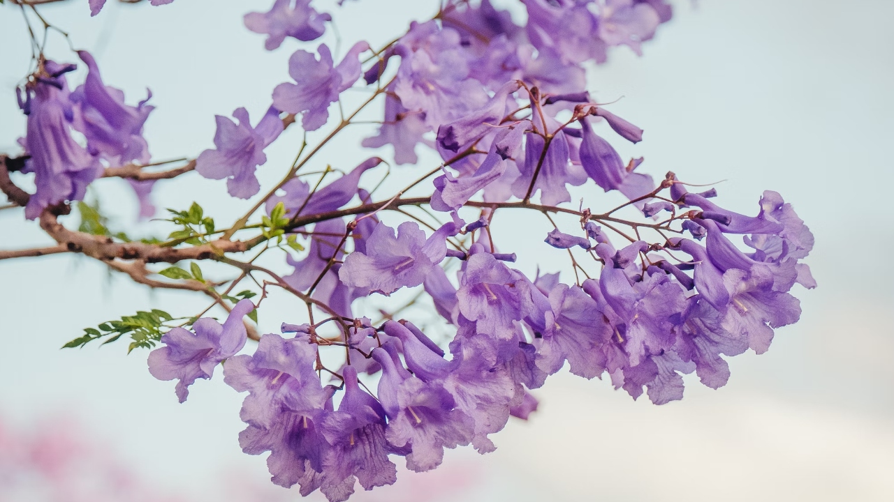

¿DONDE VIENEN LOS COLORES? |
||||
Los colores de las flores provienen de la acumulación de pigmentos químicos en sus pétalos, controlados genéticamente para atraer polinizadores. Al recibir luz solar, estos pigmentos absorben ciertas longitudes de onda y reflejan el color que vemos, siendo los principales carotenoides (amarillos/rojos), (azules/violetas/rosas) y betalaínas. Los colores de las flores provienen principalmente de pigmentos naturales que las plantas producen mediante procesos genéticos y bioquímicos. Estos colores no son solo adornos; son herramientas esenciales para la supervivencia y reproducción de la especie.

|